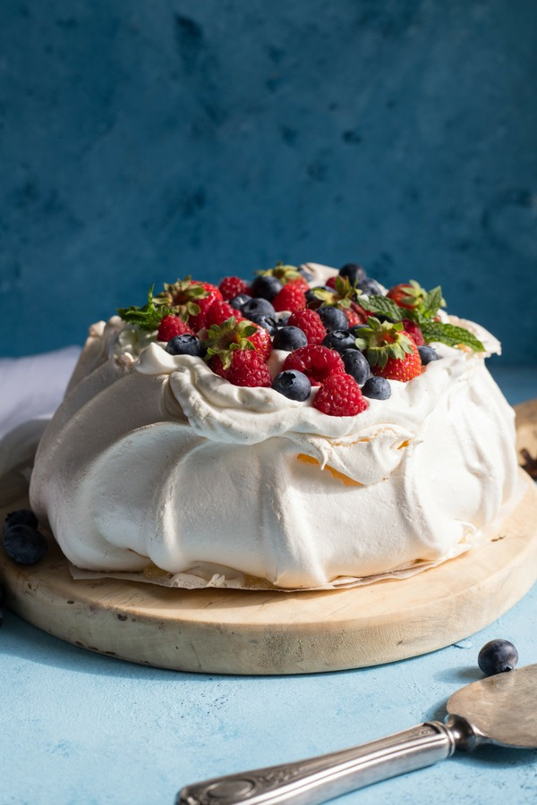

Pavlova

DESCRIPTION
Pavlova is Australian! It is another Australian classic dessert recipe that is always served for family events or celebrations - big or small. It's super popular because it's so easy to make and always looks impressive!
Pavlova is traditionally made from a base of meringue topped with whipped cream and fruit – although these days there’s lots of creative ways you can make it.
INGREDIENTS
The meringue shell is a super simple blend of eggs, sugar and vanilla essence, with a little vinegar and corn starchadded to make it both fluffy AND crispy. A few quick notes on these ingredients:
- Eggs - For best results, make sure to use room-temperature eggs. We use chicken eggs for this recipe, but duck eggs are absolutely fabulous if you can get your hands on them!
- Sugar - We recommend aster sugar aka super fine sugar. It dissolves into the egg whites more quickly and will give you that smooth texture you're looking for.
- Vinegar - The acid in vinegar helps the egg whites become fluffy and hold onto all that air that’s beaten in. Regular white vinegar (or white wine vinegar) is the best choice, but you can substitute with apple cider vinegar, cream of tartar, or even lemon juice in a pinch. We don’t recommend strong dark vinegars like balsamic or malt as they’re more likely to add a strong flavour to the meringue.
INSTRUCTIONS
How To Make Pavlova
This is the EASY method to make pavlova which we’ve called 2-4-6-8, due to the speed settings used to get that glossy meringue mixture we’re looking for! You can make it in a Kitchenaid Mixer, a regular stand mixer, or a mixing bowl with a hand mixer and gradually increase the speed settings to get it just right.
- Pop your egg whites into the mixing bowl and attach the whisk to the stand mixer (or use a hand mixer). Start by whipping them on Speed 2 then move through to Speed 4 after a couple of minutes.
- When the egg whites turn into bubbly soft peaks, up the speed to 6 and add the caster sugar and cornflour, then increase to Speed 8 for 10 – 12 minutes until you’ve got yourself a luxuriously smooth, glossy meringue mixture.
- Now bring the speed down to 4 and pour in the vinegar and vanilla essence. You might need to scrape down the meringue from the sides of the bowl every now and again with a spatula to make sure it mixes through. Let it mix for 1 minute then switch off your mixer.
- Scoop out the glossy meringue mixture onto a lined baking tray and form a flat circle shape. Smooth it out or get creative with decorative patterns, twists or twirls. Pop in the oven and bake for an hour to an hour and a half until the meringue sets into a crunchy, crispy outside with a soft golden glow. When the outside is firm and dry, and cracks start to appear on the top, you’re ready to go. Switch off the oven and allow the pavlova to cool in the oven with the door slightly open.
- While the pavlova is cooling, pour your cream into your cleaned mixing bowl and pop in the freezer for 10-15 minutes. When your pavlova is cool, place the bowl back on the stand mixer (or grab your hand mixer) and whip the cream on Speed 6 – 8. Add in the sugar and vanilla essence and continue to whip until the cream thickens and holds a nice shape.
- Top your cooled pavlova with whipped cream and sliced fruit, and dust with icing sugar.
Pavlova Topping Ideas
While the magic is happening as you bake your pavlova in the oven, you’ll have plenty of time to plan your toppings. Here are a few of our favourite topping combinations to get you started!
- Classic: strawberries + kiwi + passionfruit + cream + icing sugar
- Bogan Marie Antoinette's Favourite: strawberries + raspberries + blackberries + blueberries + cream
- Fruity Goodness: blueberries + mango + passionfruit
Also, whatever you do, don’t skimp out on that whipped cream. Slather a nice thick layer over the top of your pavlova, and make yourself a nice base for your fruit and extra decadence for your plate.
INSTRUCTIONS
- Always use room-temperature eggs – cold eggs can cause your meringue mixture to be too runny.
- Don’t be tempted to add the sugar into the egg whites too quickly. If added too soon, this can make the meringue runny.
- Give the egg whites and sugar plenty of time to combine fully. If you don’t, it can lead to a gritty texture and may cause the pavlova to crack or collapse.
- Cooking the pavlova on the lowest rack in the oven can help to stop it cracking.
- For best results, try avoiding super humid days/environments if possible.
FAQs
When is my pavlova mixture ready?
You’ll know when it’s ready, because your meringue mixture should stay firmly stuck in the bowl, even if you tip it upside down. Testing this theory over your head is, of course, completely optional!
How long should I let my pavlova cool?
Our general rule is at least an hour or two, or even overnight if you want to play it safe. Once the oven is cool, the pavlova should be too, so it’s all good to take it out.
Why does my pavlova sink or collapse?
If you take the Pavlova out the oven too soon while it’s still warm this will cause it to sink, collapse and shrink from the cold air.
To help the oven cool down quicker, we open it just a crack so the hot air can escape faster without allowing the cold air to come in too quickly. If you’re worried, leave the pavlova in the oven overnight with the door shut then top it first thing in the morning.
Don’t worry though, pav is such a forgiving recipe – even if the meringue cracks or sinks in the middle, once it’s covered in whipped cream and toppings no one will ever know. And no matter what it ends up looking like, it always tastes amazing!
Can pavlova be made in advance?
Yes! You can make pavlova in advance, even up to a few days. Just store in an airtight container or wrapped in a clean tea towel. Keep the meringue base separate from toppings to keep it crisp, crunchy and fresh for when you serve it up.
How do I store pavlova?
It’s always best to store leftovers in the fridge, especially due to the whipped cream topping. While the shell will be softer and won’t stay as crispy, it’ll still be delicious the next day!